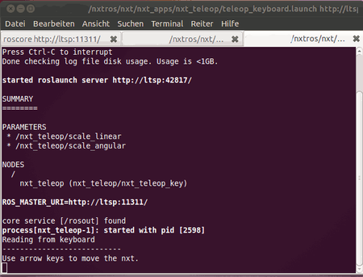
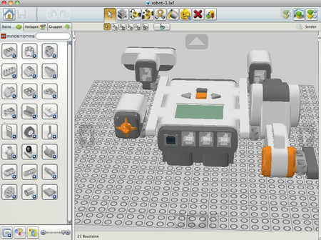
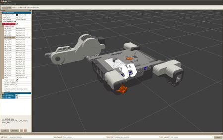

nxt-ROS
Archivierte Anleitung
Dieser Artikel wurde archiviert, da er - oder Teile daraus - nur noch unter einer älteren Ubuntu-Version nutzbar ist. Diese Anleitung wird vom Wiki-Team weder auf Richtigkeit überprüft noch anderweitig gepflegt. Zusätzlich wurde der Artikel für weitere Änderungen gesperrt.
Artikel für fortgeschrittene Anwender
Dieser Artikel erfordert mehr Erfahrung im Umgang mit Linux und ist daher nur für fortgeschrittene Benutzer gedacht.
Zum Verständnis dieses Artikels sind folgende Seiten hilfreich:
Nxt-ROS ist eine Erweiterung für das Roboter Betriebsystem ROS, das die Steuerung und eine Raumerfassung mithilfe des Lego nxt Bausteins ermöglicht. Außerdem kann man einen mit dem Lego Digital Designer (ldd) designten Roboter importieren, sodass der Roboter am PC 3D dargestellt werden kann und nicht noch aufwendig konfiguriert werden muss.
Installation¶
Ros ist nicht in den Ubuntu Paketquellen vorhanden und muss deshalb von einer Fremdquelle installiert werden.
Hinweis!
Anmerkung: Fremdquellen können das System gefährden!
Für Precise
sudo sh -c 'echo "deb http://packages.ros.org/ros/ubuntu precise main" > /etc/apt/sources.list.d/ros-latest.list'
für Quantal
sudo sh -c 'echo "deb http://packages.ros.org/ros/ubuntu quantal main" > /etc/apt/sources.list.d/ros-latest.list'
und für Saucy
sudo sh -c 'echo "deb http://packages.ros.org/ros/ubuntu raring main" > /etc/apt/sources.list.d/ros-latest.list'
Den Authentifizierungsschlüssel kann man mit
wget http://packages.ros.org/ros.key -O - | sudo apt-key add -
holen.
Nach der Aktualisierung der Paketinformation kann man nun ROS installieren.
Es gibt mehrere Versionen:
ros-hydro-desktop-full (ppa, komplettes Programm)
 mit apturl
mit apturl
Paketliste zum Kopieren:
sudo apt-get install ros-hydro-desktop-full
sudo aptitude install ros-hydro-desktop-full
alternativ
ros-hydro-desktop (ppa, abgespeckt Version)
mit apturl
Paketliste zum Kopieren:
sudo apt-get install ros-hydro-desktop
sudo aptitude install ros-hydro-desktop
oder
ros-hydro-ros-base (ppa, nur Grundprogramm ohne GUI)
mit apturl
Paketliste zum Kopieren:
sudo apt-get install ros-hydro-ros-base
sudo aptitude install ros-hydro-ros-base
Hinweis:
Da ROS sehr umfangreich ist, werden dafür ca. 4 GB benötigt. Der Download kann dementsprechend lange dauern.
Im Anschluss muss rosdep initialisiert werden mit
sudo rosdep init rosdep update
Ferner kann man noch
python-rosinstall (ppa)
mit apturl
Paketliste zum Kopieren:
sudo apt-get install python-rosinstall
sudo aptitude install python-rosinstall
installieren als Kommandozeilenwerkzeug.
Diese Anleitung folgt der Beschreibung in ROS-Wiki  .
.
Alter Teil¶
Zuerst muss eine neue udev- Regel /etc/udev/rules.d/70-lego.rules, erstellt [5] [6] werden, rosdep
1 | "BUS==\"usb\", ATTRS{idVendor}==\"0694\", GROUP=\"lego\", MODE=\"0660\"" > /tmp/70-lego.rules
|
und udev neugestartet werden.
Als nächstes muss man die Gruppe und seinen Benutzernamen der Gruppe lego hinzufügen [7].
Installieren¶
Zuerst müssen die Pakete
python-setuptools
rosinstall
mercurial
installiert werden.
Hinweis:
Zusätzliche Fremdquellen müssen hinzugefügt sein (s.o.).
python-setuptools
mit apturl
Paketliste zum Kopieren:
sudo apt-get install python-setuptools
sudo aptitude install python-setuptools
Danach wird rosinstall mit folgendem Befehl installiert
sudo easy_install -U rosinstall
und schließlich noch
mercurial
mit apturl
Paketliste zum Kopieren:
sudo apt-get install mercurial
sudo aptitude install mercurial
Jetzt kann das eigentliche nxt-ROS heruntergeladen und gebaut werden.
rosinstall ~/nxtros /opt/ros/cturtle "http://www.ros.org/wiki/nxt/Installation?action=AttachFile&do=get&target=nxt-0.1.0.rosinstall"
Danach müssen mit dem Skript ~/nxtros/setup.sh noch Variablen für ROS gesetzt werden
. ~/nxtros/setup.sh
und dann muss man schließlich noch die ROS-Erweiterung installieren.
rosmake nxt nxt_apps nxt_robots --rosdep-install
Tests und Beispiele¶
Werkzeuge¶
|  |
| nxt teleop |
Den nxt mit Tastatur/Joystick steuern¶
Hierzu wird das Modul nxt teleop benötigt. Dies wird mit folgendem Befehl gebaut:
rosmake nxt_teleop
Hinweis:
Der Übersichtlichkeit halber empfiehlt sich, ein Terminal mit mehreren Reitern zu öffnen[4].
Wenn in einem Terminal nun roscore und in einem Andern ein rosrun mit einem Roboter läuft, so kann man in einem zusätzlichen Terminal nun mit dem Befehl
roslaunch nxt_teleop teleop_keyboard.launch
die Steuerung über die Pfeiltasten oder mit
roslaunch nxt_teleop teleop_joy.launch
über einen Joystick durchführen.
Alternativ kann das Programm joy2key verwendet werden, das Joystickeingaben in Tastatureingaben umwandelt.
ldd¶
|  |
| Der Lego Digital Designer |
Der Lego Digital Designer kann bis Version 2.0 mit Wine ausgeführt werden. Für aktuellere Versionen wird eine Virtualisierung empfohlen.
Zum Umwandeln der Ldd- Dateien muss folgender Befehlssyntax verwendet werden:
rosrun nxt_lxf2urdf lxf2urdf.py <IHRROBOTER>.lxf <IHRROBOTER>.ldr > <AUSGABENAME>.urdf
Die abgebildete Beispieldateien robot.lxf  und robot.ldr können vom ROS-Wiki heruntergeladen werden. Sie sollten im Homeverzeichnis abgelegt werden.
und robot.ldr können vom ROS-Wiki heruntergeladen werden. Sie sollten im Homeverzeichnis abgelegt werden.
Das Beispiel wird dann so konvertiert:
rosrun nxt_lxf2urdf lxf2urdf.py robot.lxf robot.ldr >robot.urdf
Um das erzeugte Skript auch ausführen zu können, muss man nun noch mit einem Editor[5] eine *.launch Datei mit den Informationen für den tf tree und die Datei, in der der Roboterbauplan enthalten ist, erstellen:
1 2 3 4 5 | <param name="robot_description" textfile="$(find learning_nxt)/robot.urdf"/> <node name="robot_state_publisher" pkg="robot_state_publisher" type="state_publisher"> <param name="publish_frequency" value="100.0"/> </node> |
Jetzt kann man die launch-Datei ausführen:
|  |
| 3D Darstellung mit rviz |
roslaunch learning_nxt robot.launch
Nun ist es auch möglich, den Roboter 3D in ROS darzustellen. Dazu ist lediglich der Befehl
rosrun rviz rviz
nötig. Selbstverständlich kann man auch hier gleichzeitig nxt teleop zur Steuerung des Roboters nutzen. Die Bewegunegn werden in rviz in Echtzeit nachempfunden.
Problembehebung¶
hddtemp¶
Wenn es während der Installation von ROS zu einer Fehlermeldung kommt, kann man sie getrost mit nein beantworten. Man kann diese mit dem Befehl
echo "hddtemp hddtemp/daemon boolean false" | sudo debconf-set-selections
umgehen.
Befehl nicht gefunden¶
Wenn beispielsweise bei einem rosrun oder roslaunch die Meldung Befehl nicht gefunden erscheint, muss man erneut das Skript ~/nxtros/setup.sh ausführen.
Fehlermeldung beim Starten¶
Wenn beim Starten eine Meldung wie
Traceback (most recent call last):
File "/u/mwise/external_repos/foote-ros-pkg/nxt/trunk/nxt_python/sensor_tests/touch_sensor_test.py", line 21, in <module>
sock = nxt.locator.find_one_brick()
File "/u/mwise/external_repos/foote-ros-pkg/nxt/trunk/nxt_python/src/nxt/locator.py", line 57, in find_one_brick
raise BrickNotFoundError
nxt.locator.BrickNotFoundErrorerscheint, kann dies mehrere Ursachen haben
Der nxt Brick ist nicht angeschlossen und eingeschaltet
Die originale Lego Firmware ist nicht auf dem Brick installiert
Der Brick ist nicht mit einem USB-Kabel mit dem PC verbunden
Die udev-Regel wurde nicht erstellt
Links¶
Lego Mindstorms - Verwendung unter Ubuntu
nxt-ros-install_ubuntu-natty.sh
Installationsskript für Ubuntu 11.04 von janma
- Erstellt mit Inyoka
-
 2004 – 2017 ubuntuusers.de • Einige Rechte vorbehalten
2004 – 2017 ubuntuusers.de • Einige Rechte vorbehalten
Lizenz • Kontakt • Datenschutz • Impressum • Serverstatus -
Serverhousing gespendet von